やりたいことから引く。上の並びから選んでも、順に読んでもいい。画像はすべて実際の画面（中身はテスト用の作り物）。
どの画面も、直したあとに「保存」か「この内容にする」を押さないと何も変わらない。取り込んだだけ、打ち込んだだけでは保存されていない。
アルバイトがイベント中に触る操作は アルバイト用の手引き にある。配るのはそちら。
この手引きは誰でも見られる公開ページなので、PINは書いていない。Apps Script の「JOPT 軽食在庫管理アプリ」を開き、プロジェクトの設定 → スクリプト プロパティ → ADMIN_PIN を見る。
スプレッドシートのメニューにある「管理者PINを表示」は別のスクリプトの番号を見せるので合わない。そちらは見ない。
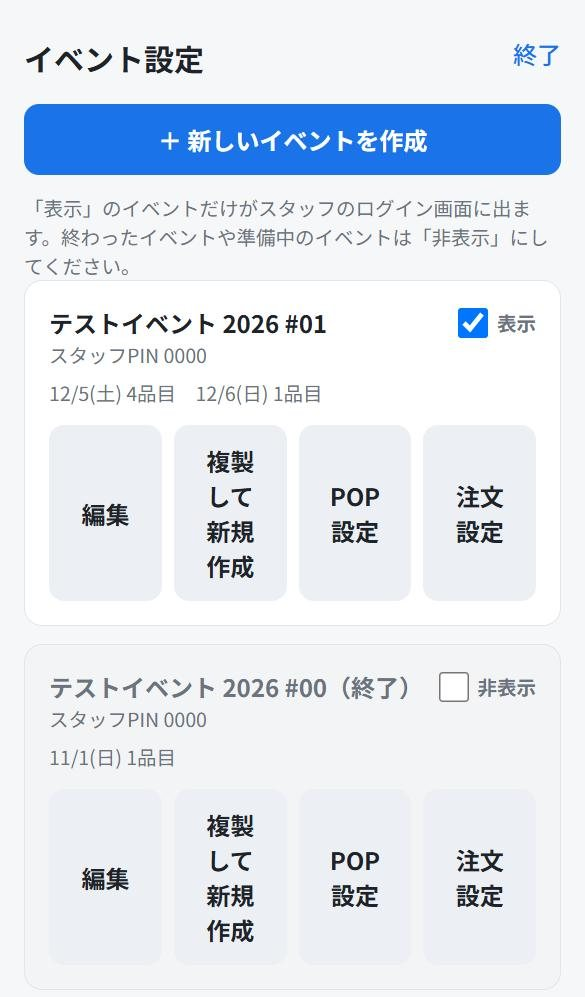
チェックが付いたイベントだけが、アルバイトのログイン画面に出る。終わったイベントと準備中のイベントは必ず外す。外し忘れると、アルバイトが間違ったイベントを選ぶ。
ゼロから作るより、前回のイベントを「複製して新規作成」するほうが速い。店舗や品目の形がそのまま残る。
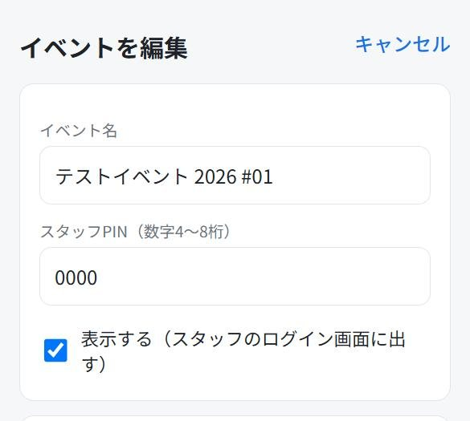
運営シートの「軽食」タブから、全開催日ぶんをまとめて取り込める。手で打つ必要はない。
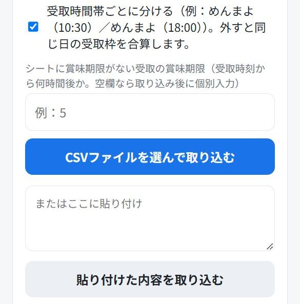
そこだけ空で入る。よくあるのは品目名が空なのに数量だけ書いてある列。シート側を直してから取り込み直すほうが早い。
開催日の中に「受取のかたまり」が並んでいる。1つのかたまり＝1つの店舗の1回の受け取り。
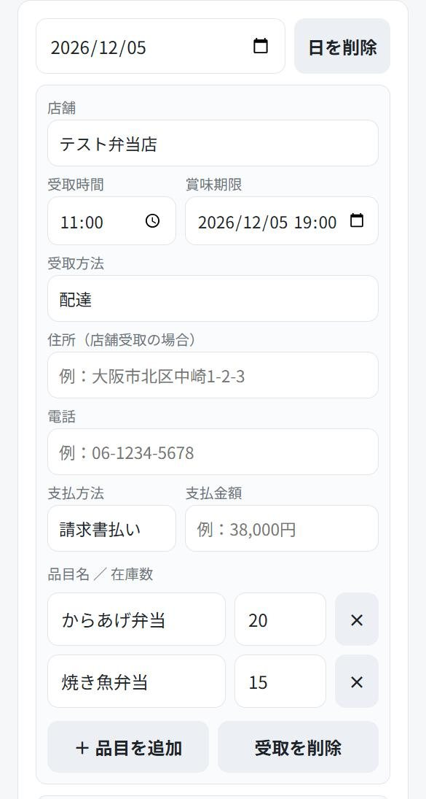
| 欄 | 何に使われるか |
|---|---|
| 店舗 | 受取タブの見出し。期限切れの単位にもなる |
| 受取時間 | この時刻までPOPに「◯:◯◯から販売」と出る |
| 賞味期限 | この時刻の30分前から画面に黄色い帯、過ぎると赤い帯が出る |
| 受取方法・住所・電話 | 受取タブに出る。住所はGoogleマップのリンクになる |
| 支払方法・支払金額 | 受取タブに黄色い枠で出る。空なら「支払い無し」と出る |
| 品目名・在庫数 | 在庫切れ記録と期限切れ入力の対象 |
在庫切れのログは品目名で紐付いている。イベントの途中で名前を変えると、それまでの記録とつながらなくなり、集計が合わなくなる。
イベントが始まったあとに金額が決まった、という場合に使う専用の入口。
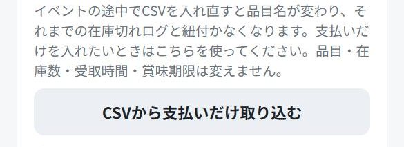
イベントの途中でCSVを入れ直すと品目名が作り直されて、それまでの在庫切れログと切れる。だから支払いだけを写す入口が別にある。こちらは品目・在庫数・受取時間・賞味期限を触らないので安全。
卓上注文を使うなら、会場のテーブル番号を入れておく。登録していない卓はプレイヤーが選べないので、誤配達を防げる。
101-110 のように範囲で書ける。カンマ・空白・改行で区切る。B2: 100-102, 201-212, 301-314, 401-406
6F: 600-620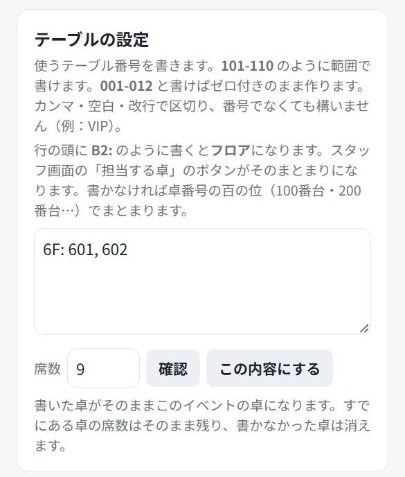
この欄に書いたものがそのままそのイベントの卓になる。いま入っている卓を先に見てから書き直すこと。すでにある卓の席数はそのまま残る。
同じ「注文設定」の画面にある。ここだけは全イベント共通で、一度決めれば次のイベントでもそのまま出る。
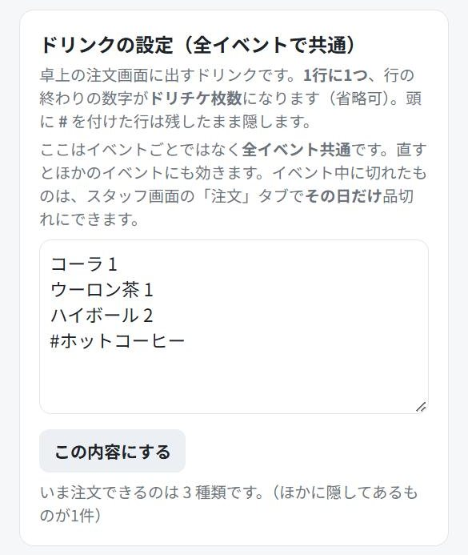
この一覧は全イベント共通なので、直すとほかのイベントにも効く。その日だけ止めたいときは、スタッフ画面の「注文」タブのボタンで品切れにする。アルバイトが自分で押せる。
11:00-23:00 の形。深夜までなら 10:00-28:00（28:00＝翌朝4時）。空にすれば時間の制限なし。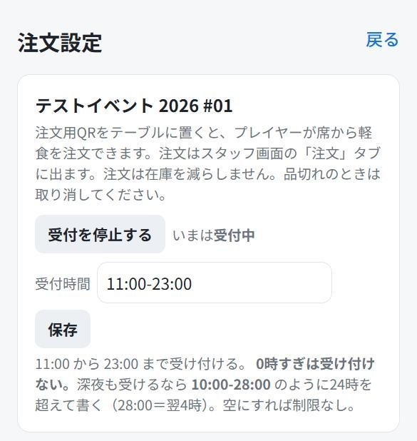
11:00-23:00 と書くと0時すぎは受け付けない。深夜まで営業する会場で 23:00 と書くと、そこから先の注文が静かに全部弾かれる。「受付中」と出ていても、受付時間外なら届かないので、画面の表示をそのまま読むこと。
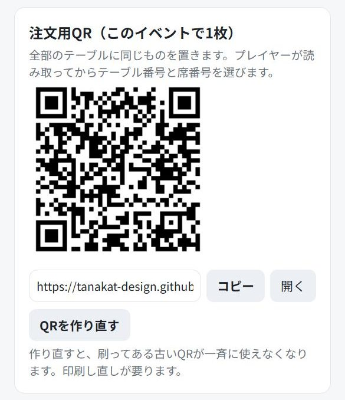
テーブル番号と席番号はプレイヤーが自分で選ぶので、卓ごとに違うQRを作る必要はない。印刷して各卓に置く。
押すと刷ってあるQRが一斉に使えなくなる。全部刷り直しになる。前のイベントのQRを無効にしたいときだけ使う。
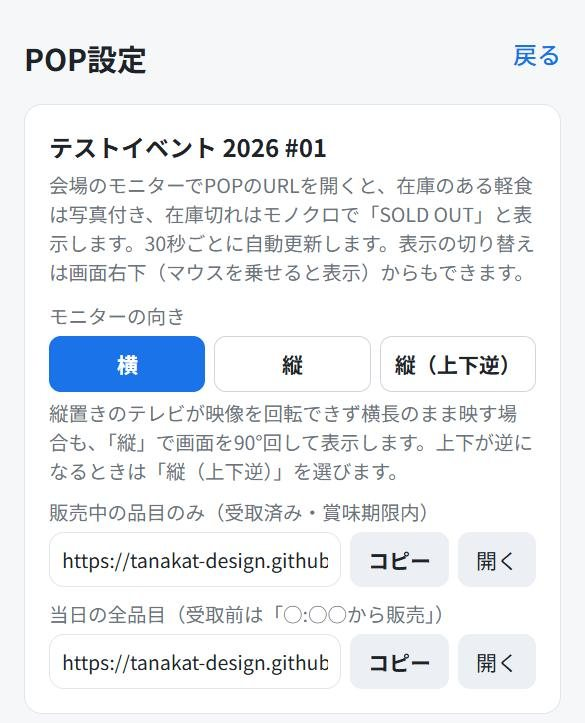
写真とドリチケ枚数は、同じ画面の下で品目ごとに登録する。品目名ごとに覚えるので、次のイベントで同じ名前ならそのまま使われる。
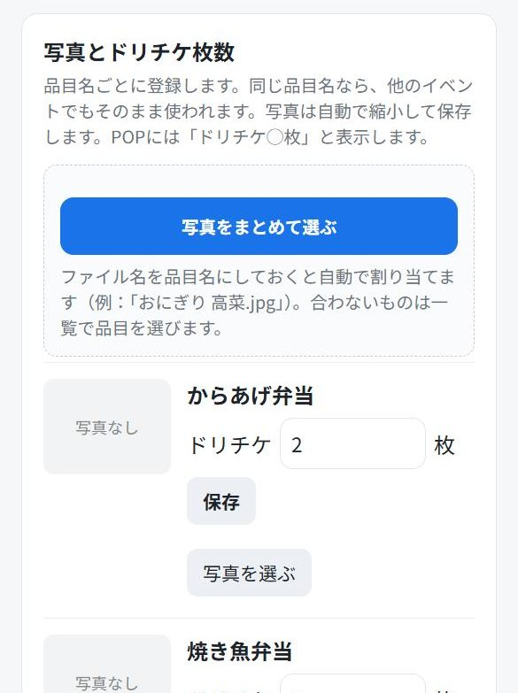
イベントを削除する必要はない。「非表示」にするだけでいい。記録が残るので、次のイベントの発注数を決めるときに使える。
いちばん下の青い「保存」を押していない。取り込んだ直後は画面の上に載っているだけで、まだスプレッドシートに入っていない。
開いている画面が古い。ページを再読み込みする。それでも出るなら、URLの末尾に &v=2 のような適当な文字を足して開き直すと確実に取り直す。
「CSVファイルを選んで取り込む」のほうを押している。支払いだけのときは下のほうにある「CSVから支払いだけ取り込む」を使う。
受付時間の外。画面に「ただし受付時間外。注文は届きません」と出ていないか見る。11:00-23:00 と書いてあると0時すぎは弾かれる。深夜まで受けるなら 10:00-28:00 のように書く。
QRを作り直したあとに、古いQRが卓に残っている。刷り直すか、作り直す前のQRをすべて回収する。
その卓が登録されていない。注文設定の「テーブルの設定」に書き足して「この内容にする」。
担当するフロアで絞られている。帯に「ほかの担当ぶんの注文を◯件隠しています」と出ていれば「全部見る」を押す。絞り込みは端末ごとの設定で、サーバーには送っていない。
3つ考えられる。一覧に書いていない、頭に # が付いて隠れている、スタッフがその日の品切れにした。最後のものは、スタッフ画面の「注文」タブでボタンがもう一度押せば戻る。
イベントが「非表示」になっているか、スタッフPINが違う。一覧で「表示」のチェックと、カードに出ているスタッフPINを確かめる。管理者PINを渡してはいけない。
その品目の賞味期限が設定されていない。設定が空の品目には帯も音も出ない。編集画面でその受取のかたまりの「賞味期限」を入れる。
設定していなければ「支払い無し」と薄く出る。これは正常。枠そのものは必ず出るようにしてある。「設定し忘れ」と「支払い不要」を見分けられるようにするため。
そういう作りになっている。注文は在庫を減らさない。依頼として記録するだけで、在庫切れの記録とは別に扱う。注文は受付であって、提供の確約ではない。